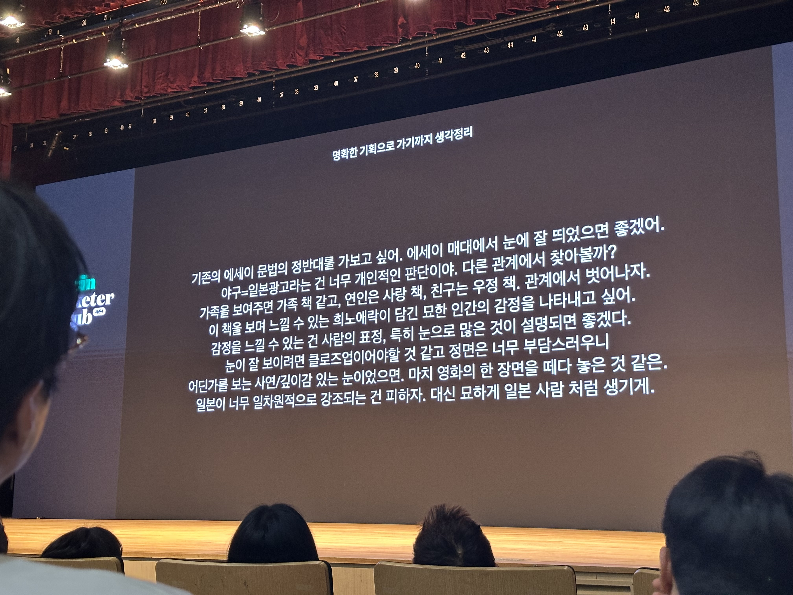

AI 업데이트,
A 사분면 워크숍
AI 트렌드 3가지 · 4회차 이후 작업 공유 · 이미 잘하는 일을 한 단계 더 깊게
AI부사수 세션 5회차 · 2026.05.08 · @Seulki.log
Recap — 4회차
Recap — 4회차
지난 시간에 다룬 것
AI 트렌드 3가지
Claude Opus 4.7, Figma × Claude (MCP), Skills 공식화.
"원문을 잘라서 넣을 필요가 없어졌다."
T 사분면 워크숍
"내 분야 아니라서" 미뤄둔 일에 발 담그기. 맥락·작은 목표·관찰·반복 4단계.
2주 작업 5선
스킬 감사·모델 재배치, 상품 완성도, 다중 컴퓨터 동기화, 멤버 마스터, 멤버 리포트.
오늘의 흐름 — AI 트렌드 3가지 → 4회차 이후 작업 공유 → A 사분면 자세히 → 워크숍 실습
Part 1 — What's New
Part 1 · What's New
지난 2주, 무슨 일이 있었나
앤트로픽이 더 똑똑한 모델을 내놓고, 디자인 도구와 AI가 왕복하는 워크플로우가 생기고, "Skill"이라는 개념이 공식 기능으로 자리 잡습니다.
3가지 모두 우리가 하고 있는 일과 직접 맞닿아 있습니다.
News 1 · Claude Opus 4.7
"한 번에 책 한 권을 읽고, 사진의 픽셀까지 본다"
2026년 4월 공개된 새 모델 Claude Opus 4.7. 한 번에 다룰 수 있는 맥락이 1M 토큰(≈책 한 권)으로 늘고, 이미지도 3.75MP 고해상도까지 바로 읽습니다.
무엇이 달라졌나
- 1M 토큰 맥락 — 녹취록 + 자료 + 템플릿 한 번에
- 2576px / 3.75MP — 기존 1568px / 1.15MP에서 대폭 상향
- 이미지 좌표 1:1 매핑 — 픽셀 단위로 위치 지목 가능
모델 전환은 /model 한 줄. 무거운 작업은 4.7, 단순 변환은 Sonnet/Haiku로 배치.
HFK 기준 체감 포인트
- 후기 생성 — 녹취 원문을 그대로 읽고 발언을 놓치지 않음
- 시즌 레터 — 이전 6호치를 전부 참고해 톤 일치
- 이미지 분류 — 카드뉴스 여백/정렬까지 판단
한 줄 요약 — "원문을 잘라서 넣을 필요가 없어졌다."
"요약부터 맡기던 시대가 끝난다"
전에는 이랬습니다
- 녹취 60분짜리를 먼저 요약해서 넣기
- 템플릿·레퍼런스 골라서 넣기
- 이미지는 작게 줄여서 넣기
"자르는 것" 자체가 시간이었고, 맥락이 빠짐.
지금은 이렇게 됩니다
- 녹취 원문 + 이전 후기 10편 + 템플릿을 통째로
- AI가 직접 "중요한 발언"을 판단
- 카드뉴스 PNG 원본을 그대로 읽고 조정 제안
두 가지 시사점
- "요약"이 사람의 일이 아니게 됨 — 원문 통째로 + 관점 지정이 더 정확함.
- "이미지 설명 능력"이 의미를 잃음 — AI가 픽셀을 직접 보니 말로 풀 필요 없음.
우리에게 주는 신호 — "AI에게 좋게 잘라주는 일"이 줄어드는 중. 우리가 해야 할 건 관점을 명확히 주는 것.
News 1 · 갑론을박
"GPT-5.5가 6주 만에 1위 탈환"? — "1위"란 무엇인가
커뮤니티 얘기
- OpenAI GPT-5.5가 여러 벤치마크에서 Opus 4.7을 앞섰다는 발표
- Reddit 개발자 커뮤니티: 실사용 코딩에선 Opus 4.7 여전히 선호한다는 의견 다수
- "모델 순위"가 6주마다 뒤집힘 → 추적 피로
왜 순위가 계속 바뀌나
프론티어 모델이 분기에 한 번꼴로 갱신됨. 각 회사가 자기 벤치마크 기준으로 1위를 주장 → 기준이 다르니 해석이 엇갈림.
"1위"는 단일 순위가 아닙니다
- LMArena — 사용자 블라인드 투표
- SWE-bench — 실제 GitHub 이슈 해결(코딩)
- HLE — 인간 최종 시험(복잡 추론)
- AIME / MATH — 수학
모델마다 강한 영역이 다르고, "종합 1위"는 없는 경우가 대부분.
우리가 취할 태도 — "1위 모델"을 좇지 말고, 내 작업에 맞는 모델을 고르기. 스킬 58개를 Opus/Sonnet/Haiku 3등급으로 나눈 것도 같은 원리.
News 2 · Claude Code × Figma
디자인 도구와 AI가 왕복하는 시대
피그마가 Figma MCP 서버를 공개. 클로드 코드가 피그마 파일을 직접 읽고, 반대로 클로드 코드로 만든 UI를 피그마 프레임으로 보낼 수 있게 됨.
두 방향 모두 가능
- Figma → Code — 프레임 URL을 붙이면 작동하는 코드 생성
- Code → Figma — VS Code에서 만든 UI를 프레임으로 내보내기
- 디자이너는 피그마, 개발자는 코드로 같은 결과물을 다룸
MCP가 뭔지 한 줄로
AI가 외부 도구(피그마·슬랙·구글)를 통일된 방식으로 조작하게 해주는 규격.
HFK 맥락에서
- 카드뉴스 HTML → 피그마 프레임으로 옮기기 (
/export-to-figma)
- 피그마 시안 → 클로드가 읽고 Imweb HTML로 변환
- 대시보드 시안을 피그마에서 잡고 클로드가 구현
핵심 변화 — 디자인이 "이미지"에서 "AI가 읽고 쓰는 파일"로 바뀌는 중.
왜 디자이너·비개발자에게 의미 있을까
"전달"이 사라짐
예전엔 디자이너가 피그마를 만들고 개발자에게 "전달"했음. 이제 AI가 중간 번역을 하니 왕복이 실시간.
디자인이 버저닝 가능
코드와 피그마가 하나의 원본처럼 움직이면, "최신 시안이 뭔지" 문제가 줄어듦.
"Skill"이 확장됨
1회차의 Skill 개념이 이제 디자인 도구까지 호출. "카드뉴스 만들어줘" → 바로 피그마 파일까지.
교훈 — "AI로 뭘 만든다"가 텍스트/코드를 넘어 디자인 결과물까지 뻗어가는 중.
News 3 · Claude Skills
"Skill"이 공식 기능이 되었다
앤트로픽이 Skill을 Claude의 공식 기능으로 정식화. 우리가 쌓아온 스킬들도 같은 개념의 표준화된 형태로 올라갑니다.
Skill이란
- 같은 작업을 정해진 순서로 반복 실행하는 "레시피"
- 마크다운 한 파일로 정의. 코드 아님
- 스킬 안에서 다른 스킬·MCP 도구 호출 가능
3회차와의 연결
3회차 카드뉴스 가이드도 Skill이었습니다. 이제 스킬 공유·설치도 쉬워지는 중.
HFK는 이미 52개
- 44개 → 52개로 (2주간 +8)
- 시즌 운영, 콘텐츠, 슬랙 자동화, 대시보드
- 운영자 1명이 커뮤니티의 대부분을 스킬 호출로 처리
스킬마다 적합한 모델
Opus 4.7(긴 맥락·판단), Sonnet 4.6(일반 실행), Haiku 4.5(단순 변환). 52개를 3등급으로 재배치한 이야기는 뒤에서.
News 3 · 궁금점 답변
"Skill이 공식 기능이 됐다" — 예전엔? 에이전트는?
Skill은 원래 "관행"
- Claude Code는
.claude/commands/ 폴더의 마크다운을 슬래시 명령으로 불러 쓰는 기능을 오래 가지고 있었음
- "Skill"이라는 이름은 커뮤니티·각 팀의 관행
- 공통 양식도, 배포 방식도 없었음
이번에 달라진 것
- 정식 이름과 규격이 생김 — 프론트매터·설명·트리거
- 스킬·MCP 도구 호출이 공식 인터페이스로
- 팀·커뮤니티가 공유·설치할 기반
이미 공식 기능. Claude Agent SDK · Subagent로 정리되어 있음. Claude Code 안에서도 Task 도구로 서브에이전트 실행.
Skill vs Agent — 차이 한 줄
- Skill — 정해진 레시피를 순서대로 따름
- Agent — 상황 보고 스스로 판단하며 실행
- 스킬 안에서 에이전트를 호출하는 것도 가능
정리 — "기능이 없었다"가 아니라, "공식 이름과 규격이 없었다"가 맞는 표현.
Trend · 만든 사람의 사용법
Claude Code 만든 보리스가 알려주는 4.7 활용 6가지
Anthropic에서 Claude Code를 만든 보리스가 직접 공개한 사용법. "대부분의 사람들이 이 도구의 절반도 못 쓰고 있다"는 진단에서 출발.
1. Auto Mode
긴 작업을 옆에서 안 지켜봐도 됨. 모델이 스스로 안전 여부를 판단해 안전하면 자동 승인, 위험하면 멈추고 물어봄.
Shift+Tab으로 토글
2. /fewer-permission-prompts
Auto Mode를 안 쓴다면 필수. 세션 기록을 스캔해 반복 팝업 명령어를 찾아내고 Allowlist 추천까지 자동.
한 번만 실행 → 팝업 피로도 절반
3. Recaps
긴 세션에서 "내가 뭐 하다 말았지?"를 알아서 요약. 예: "6분 27초 고민 후 버그 수정. PR #29869 머지. 다음: 스크린 녹화 필요."
저장·복귀가 한결 수월
4. Focus Mode
중간 과정 전부 숨기고 최종 결과만. "AI가 뭘 하는지 안 궁금해?"라는 물음에 보리스 답: "4.7부터는 그냥 믿게 됐다".
/focus로 켜고 끄기
5. Effort 5단계
생각 예산 대신 적응형 사고. Low · Medium · High · XHigh · Max 직접 조절. 왼쪽=속도, 오른쪽=지능.
"도구가 사람에게 맞춰진다"
6. 검증 수단을 꼭 주세요
제일 중요. 4.7은 생산성 2~3배인데, 단 Claude가 자기 일을 검증할 방법이 있어야. 백엔드→서버 직접 실행, 프론트→Chrome 확장, 데스크톱→Computer Use.
보리스 본인 프롬프트: "~해줘 /go"
세줄 요약 (보리스)
① Auto Mode + /fewer-permission-prompts → 팝업 스트레스 0
② Recaps + Focus Mode + Effort 튜닝 → 집중력 3배
③ 검증 스킬(/go) → 생산성 2~3배
"10분 세팅이 3개월 생산성을 바꾼다."
Trend Reflection · 1
"AI가 못하는 걸 찾자"는 이미 진 게임
많은 사람들이 이렇게 말합니다. "AI가 못하는 걸 찾아야 해. 창의성 같은 거."
하지만…
- Veo3를 보고도 그런 말이 나오시나요?
- 지식? 이미 AI가 박사보다 많이 압니다.
- 기술? 코딩도 다 시간문제입니다.
- 창의성? AI가 만든 그림이 공모전에서 우승합니다.
희소가치는 사라지고 있습니다. 우리의 "능력"은 모두 쓸모없어(obsolete)지고 있습니다.
"능력"으로 경쟁하려는 생각은 버려야 합니다
그건 이미 진 게임입니다. 우리가 가야 할 곳은 "능력"이 아니라, 가장 인간적인 영역입니다.
AI가 대체하지 못하는 5가지
의지(Will) · 취향(Taste) · 결정(Decision) · 책임(Responsibility) · 희생(Sacrifice)
Trend Reflection · 2
"무엇을 책임지겠다"고 의지를 발휘하느냐
의사의 예
AI는 데이터를 분석해서 진단을 내립니다. "이 환자의 수술 성공 확률은 94.5%입니다."
하지만 AI는 수술을 '결정'하지 못합니다. 확률은 계산할 수 있어도, 그 결과에 대해 책임이 없기 때문입니다.
인간이어야 하는 이유
순간에 판단을 내리고, 환자의 가족에게 "수술합시다. 제가 최선을 다하겠습니다"라고 말할 의사가 있어야 합니다.
설령 수술이 잘못되더라도, 그 비난과 책임, 법적·도덕적 불안을 감수하겠다고 자처하는 존재. 그게 인간입니다.
인간성(Humanity)에서 나옵니다
중요한 질문은 "무엇을 할 수 있느냐"에서 나오지 않습니다.
"무엇을 책임지겠다고 의지를 발휘하느냐"에서 나옵니다. Level N+1 시스템인 AI와의 공생에서 우리가 공급할 우리 몫입니다.
※ 기생충(parasite)이냐의 문제는 살짝 미루어둡시다.
Bridge · 잘 쓰는 사람의 조건
Claude Code를 잘 쓰려면, 세 가지가 함께 있어야 합니다
도구가 손에 있다고 결과가 자동으로 나오지 않습니다. 셋 중 하나라도 빠지면 도구는 책상 위에서 놀게 됩니다.
1 · 데이터 기반의 숙원 사업
"이거 좀 자동으로 처리됐으면" 하고 오래 미뤄둔 일이 머릿속에 한두 개는 있어야 합니다.
- 이미 어떤 데이터가 있는지 알고 있고
- "이런 결과가 나왔으면" 하는 그림이 있는 일
- 예: 멤버 마스터 테이블, 시즌 운영 대시보드
2 · 기술에 대한 호기심
새 모델, 새 기능이 나오면 직접 만져보고 싶은 마음이 있어야 합니다.
- "이게 뭐길래?"부터 시작하는 태도
- 완전히 이해하지 못해도 일단 켜보는 자세
- 예: Opus 4.7, Figma MCP, Skills
3 · 업무에 대한 욕심
지금보다 한 단계 더 잘 해내고 싶은 마음이 있어야 합니다.
- "이 정도면 됐다" 대신
- "이번엔 이걸 해결하자"의 태도
- 지표를 보고 다음 일을 잡는 자세
셋이 만나는 자리: 숙원 사업이 있어 시작하고, 호기심이 있어 새 도구를 켜고, 욕심이 있어 끝까지 다듬습니다. 셋이 만나야 도구가 결과로 바뀝니다.
Part 2 — 4회차 이후
Part 2 · 4회차 이후
4월 25일 ~ 오늘,
A 사분면을 향한 작업들
4회차에서 T 사분면 워크숍을 마치고, 이번 사이는 "이미 잘하는 운영 자동화를 더 깊게" 파고든 시간이었습니다.
한눈에 보기
2
신규 스킬
(rename-team · normalize-profile-gallery)
4
강화·정립 스킬
(post-event · check-arrivals · sync-products · md→html)
날짜별 흐름
- 4/26 post-event-attendees 강화 · check-event-arrivals 정립
- 4/27 rename-team 스킬 신규 · 팀명 변경 2건 · 멤버 리포트 v2 · 26여름 성장 트랙 5단계 · 짝팀 상호 추천 제외 · LLM 리포트 보존
- 4/29 이벤트봇 버그 수정 · 저자북토크 · 봄시즌 레터 #9
- 4/30 26여름 22팀 노트 일괄 정비 · 팀명 5개 일괄 리브랜딩(리더십씽킹·미팅룸영어·생존에디션·경력부스터·설득의기술) · 메모리 동기화 안전장치
- 5/1 서울재발견 전면 재기획 · 리더의서재 일정 재확정 · 26여름 전 팀 sync-products 동기화
- 5/2 파트너 프로필 8회 반복 보정 → normalize-profile-gallery 스킬화 · 직장인문학 imweb 6회차 구조 수정 · 사전 읽을 거리 섹션 추가 · 컨퍼런스콜 링크 1차 사고 + 1차 fix · sync-products 카테고리 정본화
- 5/3 팀 추천 위젯 신규 · 컨퍼런스콜 2차 사고 → 변환기 영구 fix · CLAUDE.md 옵시디언 본문 보호 강화
- 5/5 heypop 캘린더 일정 정리 · 5회차 발표 준비 · 데일리 노트 루틴
10일간의 패턴
"이미 잘하는 운영 자동화를 더 정교하게"가 중심. 신규 영역 진입(T)이 아니라 기존 영역의 깊이를 한 단계 올리는 작업.
초반: 사고 후속 강화 · 자동화 정립 · 프레임워크화. 후반: 일회성 작업 → 스킬 영속화, 메모리만 두지 말고 변환기 자체 fix, 데이터 → 위젯으로 한 단계 더.
Output 1 · 이벤트 운영 자동화 심화
이벤트 한 번을 끝까지 자동으로 받쳐주기
post-event-attendees 강화 (4/26)
- 저자 북토크에서 안내 불릿/강조 문구가 누락된 사고 발생
- 발송 전
--bullets on|off, --note "..." 필수 입력 강제화
- dry-run에서 두 옵션 미지정 시 ON/OFF 양쪽 미리보기 제공
"실수가 일어난 자리에 안전장치를 박아둔다."
check-event-arrivals 정립 (4/26)
- 이벤트 30분 전 도착 미확정자 자동 체크
- 캘린더 → 채널 → 회차 공지 봇 메시지 자동 매칭
- 분류 규칙:
:o: + 어드벤처 댓글 = 참석, 운영자·호스트는 자동 제외
왜 A 사분면 작업인가
이벤트 운영은 이미 잘 돌아가고 있던 영역. 그 위에 "사고가 났을 때 어떻게 막을지", "눈으로 일일이 안 봐도 되게"를 한 겹 더 얹은 작업.
T가 "이런 영역 자체를 한번 해본다"라면, A는 "같은 영역에서 한 단계 더 정교해진다".
의미 — 이벤트 운영의 신경망 한 줄이 더 연결됨. 다음 사고는 같은 자리에서 다시 일어나지 않음.
Output 2 · rename-team 스킬 신규
팀 이름 변경, 한 줄로 끝내기
왜 만들었나 (4/27)
- 26여름 시즌 준비 중 두 팀 이름 변경 필요
- 50+ → 50+로드맵
- 에세이쓰기 → 본질의발견
- 옵시디언 노트, Imweb 상품, Slack 채널, 시즌 데이터, 캘린더 등 참조 위치가 수십 개
한 번에 처리하는 것들
- 파일/폴더 이름 일괄 변경
- 마크다운 안의 모든 참조 치환
- 서브모듈 포인터 반영
- git 추적 정리
A 사분면 관점
"팀 이름 바꾸기"는 운영자가 매 시즌 마주하는 일. 늘 손으로 하던 작업을 스킬 한 줄로 줄이면, 시즌 직전 시간이 다른 곳으로.
효과 — 이번 두 건 변경에 걸린 시간: 수동이면 반나절, 스킬로는 10분.
Output 3 · 멤버 리포트 v2 & 26여름 성장 트랙
"이 멤버에게 다음 시즌 뭘 추천할까"를 데이터로
멤버 리포트 v2 (4/27)
- 4회차 때 만든 신규/재등록 두 버전을 한 단계 더
- 재등록 멤버에게 "이번 시즌 추천 팀"까지 데이터 기반
- 지난 시즌 활동 요약 + 이번 시즌 매핑
26여름 성장 트랙 5단계
- Vertical — 같은 영역 더 깊게
- Horizontal — 인접 영역으로 확장
- Enrichment — 현재 자리에서 풍성하게
- Realignment — 방향을 다시 잡기
- New Horizons — 완전히 새 영역
Coca-Cola의 5방향 커리어 모델을 HFK 팀 구조에 매핑.
왜 A 사분면 작업인가
멤버 리포트는 4회차 때 이미 만들었음. "잘 돌아가는 것"을 그대로 둘 수도 있었음. 하지만 한 단계 더 깊게: "이 멤버에게 다음에 뭐가 좋을까"까지 답하려면, 팀 구조 자체에 철학이 들어가야 함.
전환 — "리포트 = 안내문"에서 "리포트 = 개인 로드맵"으로.
Output 4 · 정합성 감사 자동화
데이터가 어긋날 자리를 미리 막기
짝팀 추천 제외 룰 (4/27)
- AI부사수와 AI핸즈온 두 팀은 동일 운영자가 진행
- 한쪽 멤버에게 다른 쪽을 추천하면 중복 등록 사고가 남
- 추천 로직에 상호 영구 제외 룰 박음 (
filter_summer_candidates.py)
26여름 3중 정합성 감사 (4/27)
- 옵시디언 노트 / Imweb 상품 / 시즌 데이터 시트 3곳이 한 줄로 일치해야 함
- 한 군데라도 어긋나면 멤버 리포트가 잘못 나감
- 이번 라운드에서 실제 어긋난 항목 발견·수정
자동 빌드 시 LLM 리포트 보존 (4/27)
대시보드를 자동으로 다시 빌드할 때, 비싸게 만들어둔 LLM 분석 리포트가 덮어써지는 문제. 병합 모드로 바꿔서 사람이 만든 컨텐츠는 보존.
왜 A 사분면 작업인가
"데이터 정합성"은 이미 잘 챙겨오던 영역. 다만 규모가 커질수록 사람 눈으로는 어긋난 자리가 안 보임. 잘하던 것을 시스템화해서, 다음 시즌엔 손이 안 가도록.
패턴 — "사람이 챙기던 것"이 "시스템이 챙기는 것"으로 한 칸 이동.
Output 5 · 운영 팁
세션 관리 — 한 번에 너무 많이 띄우지 않기
최근 부딪힌 문제
- 스킬 여러 개를 동시에 돌리느라 세션을 5~6개씩 띄워둠
- 어느 세션이 어디까지 진행됐는지 머리로 추적 안 됨
- 화면을 옮길 때마다 맥락이 끊겨 집중력이 흩어짐
- 병렬로 굴리면 빨라질 줄 알았는데, 오히려 스트레스가 높아짐
왜 이렇게 되나
AI 세션은 띄우는 비용이 거의 0이라 자꾸 더 띄우게 됨. 하지만 진행 상황을 챙기는 일은 사람 몫이고, 그 비용은 세션 수에 비례해서 늘어납니다.
지금 들이고 있는 습관
- 옆에 둔 종이 노트에 세션별 진행 상황을 손으로 적기
- "무슨 작업 / 어디까지 / 다음 할 일" 한 줄씩
- 한 세션이 막히면 노트에 표시하고 다른 세션으로 이동
- 다 끝난 항목엔 줄을 그어 시야에서 지움
디지털 노트보다 종이가 좋은 이유: 화면 바깥에 있어야 스위칭 비용이 안 듦.
배운 것 — AI 세션을 늘리는 일과 사람의 주의를 관리하는 일은 별개. 세션은 손이 추적할 수 있는 만큼만.
Output 6 · 이미지 일괄 처리 (5/2)
26여름 파트너 23명 프로필 — 갤러리 통일감 만들기
요청
- 투명 레이어 PNG 23장 → 흑백 + 밝기 균일화 + 얼굴 사이즈 동일화
- 레퍼런스: 김라현(톤), 최지원(얼굴 사이즈)
8회 반복으로 도달
- 히스토그램 매칭 — 디테일 다 뭉개짐
- 단순 BT.709 그레이스케일 — 밝기 편차 큼
- Haar Cascade — 셔츠/모자 false positive
- YuNet + 피부 패치 — 검출 정확도 90%+
- 비대칭 감마(밝게만) — 밝은 사람은 그대로
- 김민정 contrast 압축 — 개별 조정
- 얼굴 크기 정규화(최지원 163px) — 캔버스 자동 산출
- 최종 밝기·대비 균일화 — sharpening은 과해서 제거
배운 것 5
- 통계 매칭은 위험 — 한 사진의 분포 강제 시 디테일 파괴
- 검출기는 단계적으로 — Haar → YuNet 신뢰도 ↑
- 비대칭 보정 — "동일하게"가 항상 최선이 아님. 원래 밝은 사람을 어둡게 만들면 character 망가짐
- 통계 + 눈 — 평균 휘도 같아도 시각적으론 다르게 읽힘
- LANCZOS + sharpening 주의 — 추가 unsharp mask는 종종 과함
A 사분면 사례 — 이미지 일괄 처리는 "이미 잘하는 일"(Python · OpenCV · PIL). 그걸 사용자 피드백 루프와 결합하니, 한 번에 안 풀려도 8회 반복이 비싸지 않음.
한 단계 더 — 스킬화 (5/2)
8회 반복으로 도달한 파이프라인을 그날 바로 normalize-profile-gallery 스킬로 정리. 다음 시즌 파트너 사진이 바뀔 때 다시 8번 반복할 필요 없음.
"한 번 풀어낸 문제는 두 번 풀지 않는다" — 일회성 결과물 → 스킬 한 줄.
Output 7 · 팀 추천 위젯 신규 (5/3)
"내 직무·연차에 맞는 팀이 뭐예요?"를 데이터로
2단계 추천 흐름
- 1단계 — 직무·연차 매트릭스: 13개 직무 × 5개 연차 = 65개 조합. 2018년부터 누적된 멤버 등록 데이터로 조합별 top 3 팀 산출
- 2단계 — 고민 키워드 refine: 한두 줄 입력 → 팀 키워드와 매칭 + 1단계 결과에 가산점 → 다시 top 3
- 보조 흐름: 성장 트랙(Vertical · Horizontal · Enrichment · Realignment · New Horizons) 5장 카드로 직접 골라보기
사용자 행동 로깅
- profile_submit / refine_submit / track_select / team_click 4종 이벤트
- Google Apps Script 백엔드 (sendBeacon으로 끊김 없는 전송)
- "어떤 직무·연차 조합이 어떤 팀에 호응했나"가 다음 시즌 추천 데이터로 다시 들어감
왜 A 사분면 작업인가
멤버 추천은 4회차 멤버 리포트(개인 단위) → 5회차 26여름 성장 트랙(팀 분류 철학)으로 발전해왔음. 이번엔 같은 데이터를 상품 페이지에서 누구나 클릭할 수 있는 위젯까지.
"운영자만 보던 추천"에서 "고객이 직접 시도하는 추천"으로. 같은 데이터의 노출 면적을 한 단계 더 넓힘.
설계 디테일
- 1단계 데이터는
scripts/build_member_recs.py가 빌드 시 JSON으로 박음 (런타임 API 호출 없음)
- 2단계 매칭은 클라이언트에서 키워드 점수 계산 (개인정보 서버 전송 0)
- "준비 중" 팀은 별도 배지로 표시, 클릭 비활성화
패턴 — 내부 데이터 → 외부 위젯. 이미 가진 자산을 한 채널 더 노출하는 A의 전형.
Output 8 · 사고 → 변환기 영구 fix (5/2~5/3)
메모리만 두면 또 깨진다 — 코드 자체를 고치기
1차 사고 (5/2)
- 컨퍼런스콜(상품번호 274) 6회차 커리큘럼 "읽고 올 아티클" 11개 링크가 깨짐
- 증상:
[제목](https...//URL) — URL의 https: 콜론 손실
- 원인:
[텍스트]: 값 패턴으로 오인해 첫 :에서 split
- 1차 fix: 메모리 등록 + 해당 상품만 수동 patch
2차 사고 (5/3)
- 1차 메모리는 있었지만 변환기 자체가 fix되지 않은 상태로 22팀 sync
- nested bullet
- [제목](URL)을 활동 라인으로 잘못 매칭 → 11개 링크 다시 깨짐
최종 fix (5/3)
md_to_imweb_html.py:parse_sessions 수정- sub-bullet이
[로 시작하면 활동 아닌 자료 링크로 라벨에 묶기
- 활동 타입은
길이 ≤16 + [/http/// 미포함만 인정
- push 전 자동 grep
\[[^\]]+\]\(http 잔존 0개 검증 강제
- push 후
imweb_get_product로 재검증
왜 A 사분면 작업인가
"메모리만 업데이트하고 변환기를 안 고치면 다음 sync에서 재발한다"는 룰을 메모리에 박음.
A는 사고가 일어난 자리에 안전장치를 박는 것의 두 번째 사례. Output 1이 절차를 강제했다면, 여기서는 변환기 코드 자체를 고침.
교훈 — 메모리는 진단용, 코드 fix가 영구 해결. 같은 사고 두 번이면 코드를 의심.
Part 3 — A 사분면
Part 3 · A 사분면 워크숍
오늘은 A, 더 깊게 갈 차례입니다
4회차에서 "못한다고 생각했던 일"에 발 담갔다면, 오늘은 "이미 잘하는 일을 한 단계 더" 끌어올립니다.
A 사분면이 어디에 있는지 다시 보기
S · Start
하고 싶었는데 미뤄왔던 일 — 습관 형성
T · Try
평소 잘 못한다고 생각했던 것 — 도전과 성장
A · Amplify (오늘 다룸 ★)
이미 잘하지만 더 잘하고 싶은 것 — 차별화
R · Recover
반복 작업을 효율화 — 시간 회수
왜 A인가? T가 "안 해본 영역에 발 담그기"였다면, A는 "이미 자기 영역에서 한 단계 더 깊이". 자기 강점을 차별화로 만드는 자리.
A = Amplify — 이미 잘하는 것을 더 깊게
"내가 좀 하는 일이지" 싶은 영역. 그 안에서 늘 부딪히던 한계 한 줄을 AI에 맡겨 한 단계 끌어올리는 자리.
A 영역의 특징
- 이미 결과가 나오고 있음 — 0에서 시작 아님
- 한계가 명확함 — "이 정도가 내 한계" 지점이 있음
- 표준이 한 칸 올라감 — 다음부터는 그게 새 기본
- 차별화의 자리 — 같은 일 하는 사람과 격차 벌어짐
나의 A 영역 사례 (4회차 이후)
- 이벤트 운영 자동화 — 잘 돌던 흐름 위에 "사고 안 나게" 한 겹
- 멤버 데이터 관리 — 리포트 v1 → v2, 안내에서 개인 로드맵으로
- 시즌 운영 — 26여름 성장 트랙 5단계 프레임워크화
- 정합성 감사 — 사람 눈으로 챙기던 것을 시스템 점검으로
- 팀 운영 — rename-team 같은 반복을 스킬로
공통점: 이미 굴러가던 영역에 "한 단계 더".
A 영역 스킬은 어떻게 끌어올리는가
예시 1 — 이벤트 운영 자동화
기존: post-event-attendees는 잘 돌고 있었음. 한 번 안내 문구가 누락됐음.
- 한계 인식 — "필수 입력을 안 받는 구조라 누락됨"
- AI에 맥락 — "이런 사고가 있었으니, 다시 안 나게"
- 개선 —
--bullets·--note 필수화 + dry-run 미리보기
- 새 표준 — 다음부터는 안 빠짐
예시 2 — 멤버 리포트 v1 → v2
v1은 "안내문". v2는 "다음 시즌 추천 팀"까지 답함. 잘 돌던 v1 위에 26여름 성장 트랙 + UUID 마스터 + 추천 로직을 한 겹 더.
A 영역 공통 구조
- 강점 명시 — "내가 X 영역은 어느 정도 한다"
- 한계 지목 — "다만 Y가 늘 막힌다 / 사고가 난다"
- 목표 한 줄 — "이걸 Z처럼 만들고 싶다"
- 새 표준 정착 — 결과를 다음 기본값으로
기억할 것
A는 한 번에 큰 도약이 아니라, 표준을 한 칸씩 올리는 일. 매번 "지금까지의 한계가 새 기본"이 됩니다.
A in Detail · 예시 3
잘 돌아가던 멤버 리포트를 "개인 로드맵"까지
v1의 모양 (4회차 시점)
- 신규 멤버에겐 온보딩 안내
- 재등록 멤버에겐 이번 시즌 안내 + 지난 활동 요약
- 이미 그 자체로 충분히 잘 돌고 있던 산출물
"이 정도면 됐다"가 한계 지점.
한계 지목 (AI에 던진 말)
v1은 멤버별 안내까진 잘 함.
"다음 시즌 뭘 들으면 좋을까"는
매번 사람이 코멘트로 답하고 있음.
데이터 기반으로 1~2개 추천이 자동.
짝팀(AI부사수↔AI핸즈온)은 상호 추천 제외.
v2가 받친 두 가지 구조
- 26여름 성장 트랙 5단계 (Vertical/Horizontal/Enrichment/Realignment/New Horizons) — 추천의 좌표계
- UUID 멤버 마스터 + 추천 로직 — 한 멤버의 궤적을 보고 다음을 제안
알아야 했던 것은 두 가지뿐
- v1이 어디서 "더 가고 싶었는지" 정확히 짚을 줄 아는 것
- "이 멤버에게 무엇이 좋을지" 결정할 기준을 가지는 것
로직·자동화·데이터 정합성은 AI 몫.
A의 정수 — "잘 돌고 있는 것"을 다음 표준으로 한 칸 미는 일. "이 정도면 됐다"가 멈추는 자리.
워크숍
Workshop · Intro
오늘 워크숍 흐름
STEP 1 · 5분
잘하는 영역 떠올리기
"이거 좀 한다" 싶은 영역 3개 적기.
STEP 2 · 5분
한계 한 줄 지목
3개 중 가장 또렷한 한계가 있는 1개.
STEP 3 · 10분
강점·한계·목표 명령
강점 / 한계 / 목표 / 제약 4칸.
STEP 4 · 15분
실행 + 새 표준 정착
결과를 새 기본으로 두고 다음 한계 찾기.
목표 — 완전히 새 영역 X. 오늘 안에 "내 표준이 한 칸 올라가는 경험" 한 번 O.
Workshop · Step 1
STEP 1 — 이미 잘하는 영역 떠올리기
"잘한다"의 정의
- 이미 일정 시간/노력을 쏟아온 영역
- 주변에서 "이건 네가 좀 하지" 소리를 들어본 일
- 같은 일을 해도 결과가 남보다 빠르거나 정확한 영역
- "내 시그니처"라고 부를 수 있는 부분
업무·취미·도구 다 가능 (운영·기획·디자인·분석·글쓰기 등).
예시 (참고용)
- 회의 진행은 잘하는데, 회의록은 늘 늦음
- 제안서는 잘 쓰는데, 시각 자료가 약함
- 고객 응대는 잘하는데, 패턴 분석은 못 해봄
- 코드 리뷰는 잘하는데, 자동화는 안 해봄
- 기획안은 잘 쓰는데, 데이터 근거가 약함
"잘한다 + 한 줄 한계"가 짝으로 나오는 영역이 좋음.
활동 — 노트에 3개 적어보세요. 각 영역마다 "이 정도까진 한다"를 한 줄.
Workshop · Step 2
STEP 2 — 한계 한 줄이 가장 또렷한 1개 고르기
고르는 기준 3가지
- 한계가 한 줄로 명확함 — "X는 잘하는데 Y가 늘 부족"
- 바뀌면 다음 결과물 전체에 영향 — 한 번 끌어올리면 표준이 됨
- 결과를 가지고 있음 — 비교 대상(전 버전)이 있는 영역
하지 말 것
- 아예 안 해본 영역(그건 T)
- "한계가 너무 많다" 같은 모호한 답
- 한 번에 모든 한계를 다 풀려는 욕심
활동 — 한 줄 한계가 가장 또렷한 1개를 고르고, 그 한계를 한 문장으로 다듬어 적습니다.
Workshop · Step 3
STEP 3 — 강점·한계·목표·제약 4칸 명령
A 영역 4칸 양식
- 강점 — "내가 X 영역은 이 정도까지 한다"
- 한계 — "다만 Y가 늘 부족 / 사고가 난다 / 시간이 든다"
- 목표 — "Z처럼 한 칸 올리고 싶다"
- 제약 — "다만 A·B는 건드리지 마라"
완성 예시 — "회의록 자동화"
회의 진행·결정 정리는 능숙.
회의록 작성에 30분, 늘 다음날로 밀림.
끝나기 전에 결정 5줄 + 담당자 액션 자동.
우리 팀 회의 양식은 그대로.
활동 — 노트에 4칸을 그리고 각각 한 줄씩. "강점"을 꼭 먼저 쓸 것 — A의 출발점.
Workshop · Step 4
STEP 4 — 실행 + 새 표준 정착
실행 방법
- VS Code 클로드 코드 채팅창 열기
- 4칸 내용을 일상 언어로 풀어 입력
- 첫 결과 받음 — "v1보다 나은가" 기준으로 봄
- "한 칸 더 올리고 싶은 곳"만 1~2개 피드백
- 최종본을 "새 기본"으로 저장 — 다음 한계 또 보이면 또 한 칸
입력 예시 (그대로 써도 됨)
> 회의 진행과 결정 정리는 잘함.
다만 회의록 작성에 30분 들고
매번 다음날로 밀려.
회의 녹취 → 결정 5줄 + 담당자 액션을
끝나기 전에 자동 뽑게 만들어줘.
팀 양식은 유지.
> (결과 받은 뒤)
액션은 좋아. 결정 5줄에
반대 의견도 한 줄 같이 잡아줘.
결과를 새 기본값으로 저장하는 데까지가 STEP 4.
자주 막히는 곳
- "강점이 없다" → 남이 인정해준 적 있는 것부터
- "한계가 모호함" → 최근 사고/지연이 있던 자리가 한계
- 욕심 부려 더 가려는 유혹 → "오늘은 한 칸만"
Workshop · 예시
명확한 기획으로 가기까지 — 생각정리를 그대로 풀어내기

참고: 마케터클럽 시즌4 발표 화면
어떤 말을 AI에게 던졌나
"기존 에세이 문법의 정반대를 가보고 싶어. 에세이 매대에서 눈에 잘 띄었으면 좋겠어."
"야구=일본광고라는 건 너무 개인적인 판단이야. 다른 관계에서 찾아볼까?"
"감정을 느낄 수 있는 건 사람의 표정, 특히 눈. 클로즈업이어야 할 것 같고, 정면은 부담스러우니 어딘가를 보는 사연/깊이감 있는 눈."
이게 왜 좋은 예시인가
- 정제된 브리프가 아닌 생각의 흐름 그대로
- 싫은 것과 좋은 것을 함께 전달
- AI에게 나의 취향과 판단을 전달 → 구체적 결과로 나옴
- STEP 4의 "일상 언어로 풀어서 입력"이 정확히 이런 모양
Workshop · Wrap
오늘 다룬 A를 어떻게 키워갈까
오늘 밤
- 새 표준이 된 결과를 파일로 저장
- "v1 → v2의 한 줄 차이" 메모
- "여기서 다음 한계는 어디지?" 한 줄
이번 주
- 같은 영역에서 한 번 더 v2 → v3
- v1과 v3 비교 (격차 확인)
- 슬랙에 "내 표준이 어떻게 올라갔는지" 공유
다음 시즌
- 한 영역의 새 표준을 다른 영역에도 옮기기
- "내가 잘하는 것 리스트" 새 표준으로 갱신
- 다른 A 영역으로 확장
기억하세요 — A 영역 성공의 지표는 "결과의 화려함"이 아니라 "내 표준이 한 칸 올라갔는지"입니다.
Next
Next
6회차 예고
6회차에 다룰 것 — R (Recover) 사분면
- 매번 손이 가던 반복 작업을 AI로 회수
- A에서 새 표준이 된 작업을 스킬·자동화로
- 멤버들의 A 시도 공유 + R 영역 후보 함께 찾기
이미 잘하는 일을,
한 번 더 깊게 합니다
AI 부사수의 또 다른 쓸모는 "내 표준을 한 칸 위로"
매번 다시 끌어올려주는 데 있습니다.
AI부사수 세션 5회차 · 2026.05.08 · @Seulki.log